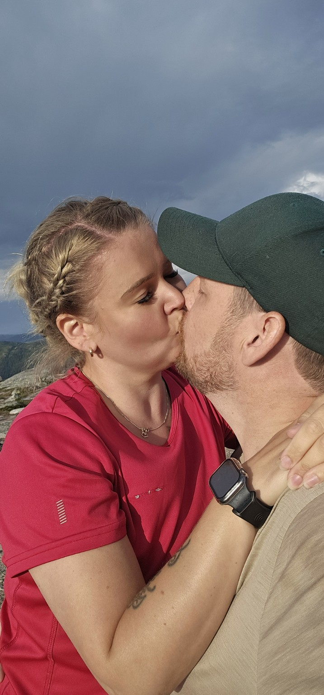

Hvis du bare kunne se deg selv gjennom mine øyne ...
Eva, i dag skal du få se noe jeg skulle ønske du kunne se hver eneste dag. ❤️

Dette er ikke bare en kjærlighetserklæring. Det er en liten reise gjennom alt du betyr for meg. Ta den i ditt eget tempo, elsklingen min.
Det begynte med deg ❄️
Jeg tenker ofte på den dagen vi møttes. Snøen dalte stille rundt oss, og et kyss ble begynnelsen på noe ingen av oss kunne vite hvor stort skulle bli.
Jeg visste ikke da at jenta foran meg en dag skulle være den jeg savnet før jeg rakk å kjøre hjem. Den jeg ville ringe for å fortelle absolutt ingenting. Den jeg ville dele både latteren og stillheten med.
Det var ikke bare et kyss i snøen, Eva. Det var begynnelsen på følelsen av å komme hjem. ❤️
Jenta med det store hjertet
Du ser kanskje alt du ikke rekker. Alt du burde gjort annerledes. Alle gangene du skulle ønske du hadde mer å gi.
Men jeg ser noe helt annet. Jeg ser ei jente som stiller opp, selv når hun selv er sliten. Ei mamma som bryr seg så dypt at det noen ganger gjør vondt. Jeg ser omsorgen du gir Athea og Chris, og hvor mye av hjertet ditt du legger i at de skal ha det godt.
Jeg ser latteren din, det herlige fjåset vårt og det blikket ditt som får resten av verden til å bli litt mindre viktig.
Du trenger ikke bevise at du er god nok, jenta mi. For meg har du aldri trengt å være noe annet enn akkurat deg. ❤️
Du ble værende
Den siste tiden har livet gjort vondt på en måte jeg ikke helt finner ord for. Å miste mamma har etterlatt et savn som ingen kan fylle.
Du har ikke forsøkt å viske ut sorgen. Du har ikke bedt meg om å være sterk. Du har gitt meg lov til å gråte, være stille, være sint, snakke om mamma eller bare høre stemmen din.
Jeg husker ordene dine. At du skulle ønske du kunne holde rundt meg. At jeg ikke trenger å stå i dette alene. De ordene har jeg båret med meg, også når vi har vært langt fra hverandre.
Du kunne ikke ta bort det vonde, Eva. Men du gjorde det mindre ensomt. Det kommer jeg aldri til å glemme. ❤️
Og jeg vil være den samme tryggheten for deg. Ikke bestemme hva du skal føle, ikke kreve at du skal være sterk. Bare være der, holde rundt deg og lytte. Også de dagene du ikke orker å forklare.
De helt vanlige dagene
Jeg drømmer ikke om et liv hvor alt er perfekt. Jeg drømmer om et liv hvor vi kan være oss.
Om å slippe å kjenne klumpen i magen når jeg må kjøre fra deg. Om å kunne gå bort til deg bare for å gi deg et kyss. Om å lage middag sammen på en helt vanlig tirsdag, le av noe fullstendig idiotisk og sovne med vissheten om at vi snart sees igjen.
Jeg gleder meg til å se Casper, Ole Erik, Athea og Chris få flere muligheter til å bli kjent og skape minner sammen, i sitt eget tempo. Til å finne en hverdag som gir plass til oss alle, uten å måtte skynde på noe.
Jeg vil ikke bare ha de store øyeblikkene med deg. Jeg vil ha tirsdagene. Handleturene. Stillheten. Fjåset. Livet. ❤️
Et løfte til deg, Eva
Elsklingen min. Hvis jeg kunne tatt hånden din akkurat nå, ville jeg sett deg i øynene og sagt dette:
Jeg lover ikke at livet alltid blir enkelt. Jeg lover ikke at jeg alltid finner de rette ordene, eller at jeg aldri gjør feil. Men jeg lover å møte deg med respekt, tålmodighet og et ønske om å forstå deg – også når vi har det vanskelig.
Jeg lover å huske at du har din egen stemme, dine egne drømmer og dine egne grenser. Jeg vil aldri at du skal måtte gjøre deg mindre for å få plass i livet mitt.
Jeg lover å fortsette å velge oss. Å ta vare på det vi bygger. Å le med deg, lytte til deg, holde rundt deg når du trenger det – og slippe deg fri til å være akkurat den du er.
Jeg vet ikke alt fremtiden vil bringe. Men jeg vet hvem jeg ønsker å møte den sammen med.
Deg, jenta mi. Alltid deg. ❤️
Og nå vil jeg at du skal høre noe ...
Trykk på avspilling når du er klar, jenta mi. ❤️
Lydhilsenen er ikke lagt til ennå. ❤️
Hjemmet mitt er ikke bare et sted på et kart. Hjemmet mitt er følelsen jeg får når du legger armene dine rundt meg.
Jeg elsker deg, Eva. ❤️
Din gutt. Din kjæreste. Din Christian.
Oss to – en forever ting. ❤️♾️